Koła zębate i wały od rysunku do gotowego detalu
Precyzyjna obróbka skrawaniem i obróbka cieplno-chemiczna w Gnieźnie. Toczymy, frezujemy uzębienia, hartujemy i malujemy części dla motoryzacji, maszyn rolniczych i przemysłu.
Elementy uzębione dla motoryzacji i maszyn rolniczych
Produkujemy części dla firm, które montują z nich własny wyrób końcowy. Park maszynowy pozwala wykonać uzębienie zarówno wewnętrzne, jak i zewnętrzne.
- koła zębate o uzębieniu prostym i skośnym
- wały i wałki do 800 mm - z uzębieniem, kanałkami, wiercone lufowo
- koła zębate żeliwne z hartowaniem zębów - technologia unikalna w Polsce
- obudowy i korpusy żeliwne i staliwne
- inne wyroby wykonywane obróbką skrawaniem
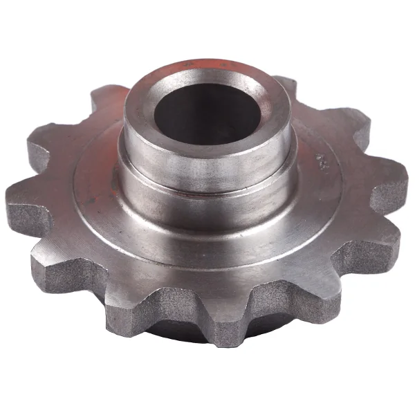
Koło łańcuchowe 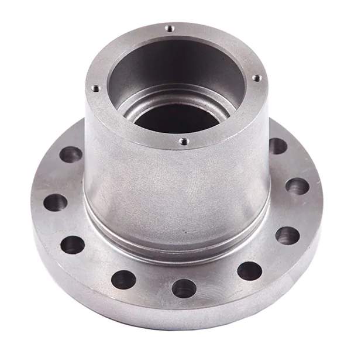
Detal toczony z kołnierzem 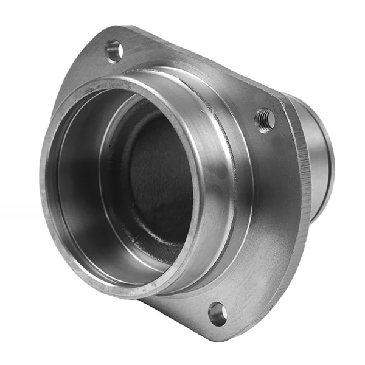
Obudowa
Cały detal pod jednym dachem
Z pręta, odlewu albo odkuwki przez obróbkę i hartowanie aż po malowanie. Przesuń, żeby przejść drogą detalu.
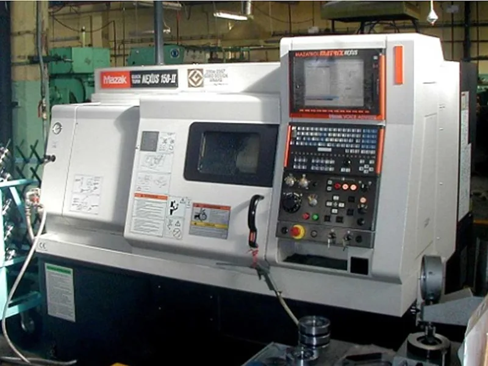
Toczenie
Tokarki CNC Mazak i Hyundai oraz konwencjonalne. Toczymy z prętów, blach wypalanych laserowo i plazmowo, odlewów i odkuwek.
CNC uchwytowe do Ø320 mm, kłowe Ø350 mm i 1000 mm w kłach
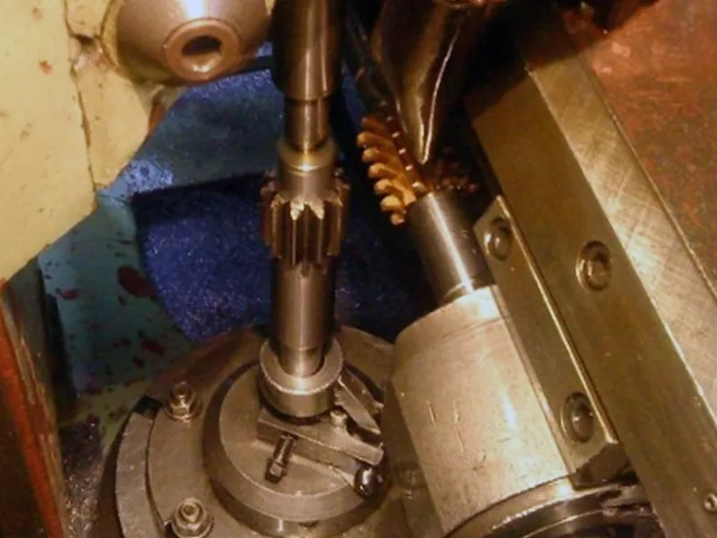
Frezowanie obwiedniowe
Koła zębate o zębach prostych i skośnych, koła łańcuchowe i wielowypusty. Bardziej wymagające koła dodatkowo wiórkujemy.
do Ø500 mm, moduł 1-12, wielowypusty do 900 mm
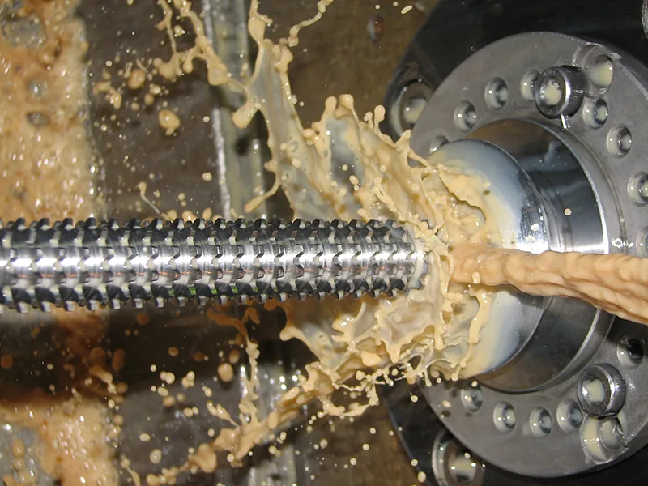
Przeciąganie
Wielowypusty i wpusty pod kliny w dłuższych seriach. Własna ostrzalnia przeciągaczy trzyma koszty w ryzach.
przeciągarki 7A-510 i 7B56, do Ø200 mm i 300 kN
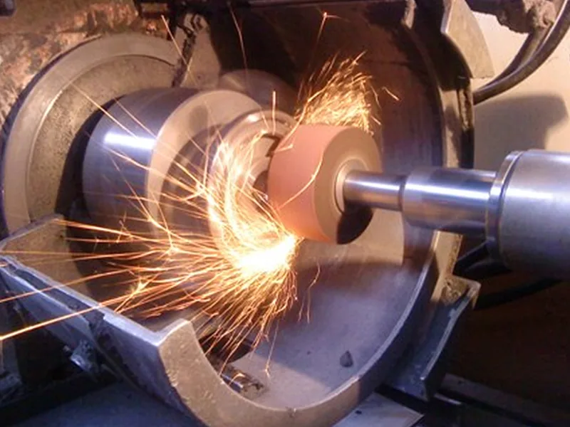
Szlifowanie
Wałki, otwory i płaszczyzny: szlifowanie kłowe, bezkłowe, otworów i płaszczyzn.
kłowe Ø250 mm x 650 mm, płaszczyzny 300 x 1000 mm
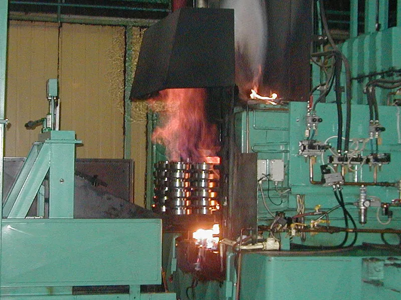
Hartowanie i nawęglanie
Hartowanie indukcyjne trwa sekundy i utwardza tylko te powierzchnie, które tego wymagają. Nawęglanie i węgloazotowanie w piecach z atmosferą ochronną.
indukcyjnie wałki do 1000 mm i koła do Ø300 mm
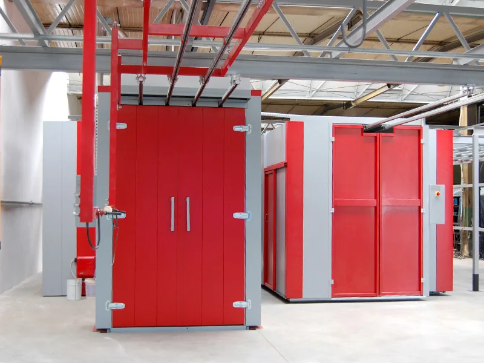
Malowanie proszkowe
Dwie linie: drobne elementy do 2 m i wielkogabarytowe do 7 m. Przed malowaniem piaskowanie, fosforanowanie lub konwersja cyrkonowa.
test komory solnej 1000 godzin, wszystkie kolory RAL
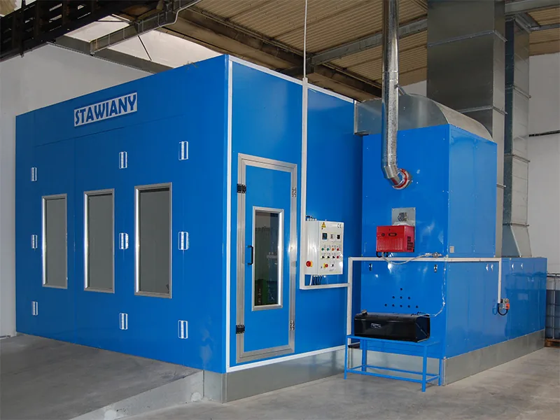
Malowanie mokre
Pyłoszczelna kabina z podgrzewaniem powietrza, agregaty wysokociśnieniowe i malowanie elektrostatyczne.
metal, tworzywa sztuczne i drewno
Pełna oferta
Obróbka skrawaniem
- Cięcie
- Toczenie
- Frezowanie
- Frezowanie obwiedniowe
- Przeciąganie
- Szlifowanie
- Wycinanie i wyoblanie
- Pomiar detali
Obróbka cieplno-chemiczna
- Hartowanie indukcyjne
- Hartowanie objętościowe
- Nawęglanie i węgloazotowanie
Powierzchnia i powłoki
- Piaskowanie
- Fosforanowanie cynkowe
- Fosforanowanie żelazowe
- Konwersja cyrkonowa
- Malowanie proszkowe
- Malowanie mokre
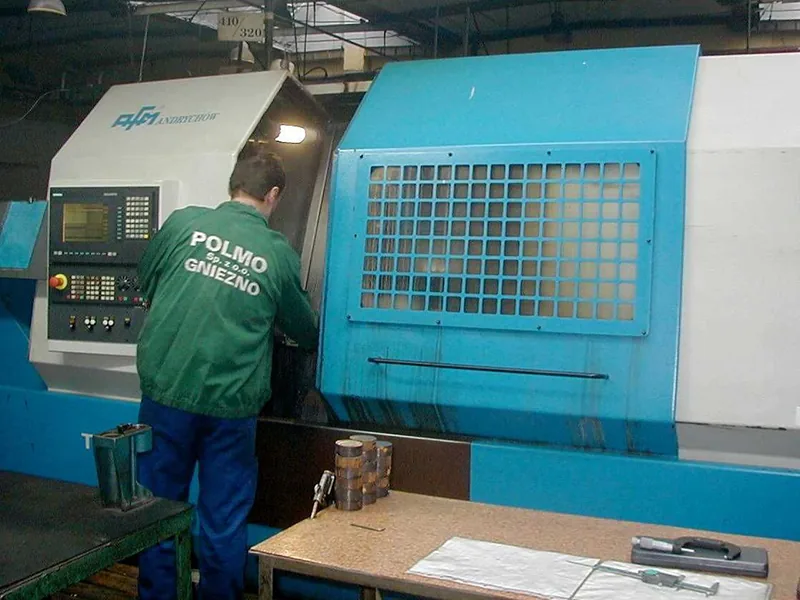
Od rysunku do wdrożenia
Pracujemy na rysunkach konstrukcyjnych i modelach CAD od zleceniodawcy. Nasi inżynierowie opracowują proces technologiczny i prowadzą wdrożenie aż do produkcji.
Przy wyrobach z odlewów i odkuwek bierzemy całą odpowiedzialność na siebie: projektujemy odlew lub odkuwkę, wdrażamy ją u dostawcy, opracowujemy technologię obróbki i wdrażamy gotowy wyrób.
- System jakości
- ISO 9001:2015
- Planowanie produkcji
- komputerowy system zarządzania produkcją z MRP
- Porządek i maszyny
- 5S i TPM - dostępność maszyn na poziomie 90%
- Kontrola
- maszyna pomiarowa, własne rozkłady twardości i zgłady
Od warsztatu Nakulskiego do Polmo Gniezno
Historia zakładu sięga 1882 roku. Już w 1939 fabryka Nakulskiego pokazała pierwsze frezarki obwiedniowe - dziś frezowanie obwiedniowe kół zębatych to nasza codzienna praca.
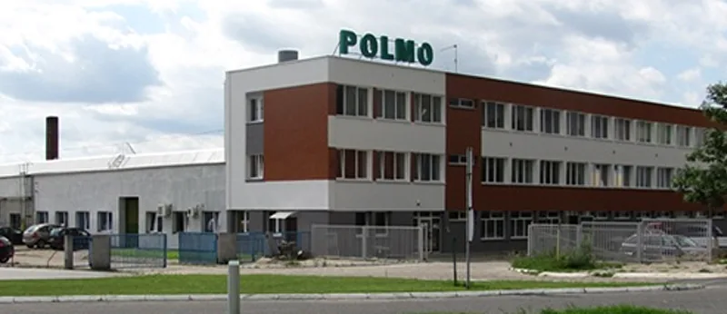
- 1882
Stanisław Nakulski otwiera warsztat naprawy broni.
- 1889
Warsztat zmienia się w Fabrykę Broni i Amunicji. W 1896 pierwszy patent na produkcję naboi.
- 1925
Projekt i produkcja pistoletu SMOK.
- 1934
Nowy profil i nowa nazwa: Fabryka Obrabiarek S. Nakulski.
- 1939
Na targach poznańskich pierwsze frezarki obwiedniowe i noże do cięcia blach.
- 1951
Po nacjonalizacji: Gnieźnieńskie Zakłady Metalowe Przemysłu Motoryzacyjnego. W latach 60. wejście do Zjednoczenia „Polmo”.
- 1977
Linia produkcyjna mechanizmów różnicowych do Honkera i Tarpana.
- 1997
Prywatyzacja - powstaje Polmo sp. z o.o.
- 2002
Nazwa, pod którą działamy dziś: Polmo Gniezno Sp. z o.o.
Sprawdź nasze możliwości i ceny
Wyślij rysunek albo model CAD z ilością sztuk - odpowiemy z wyceną. Zakład jest ok. 20 minut od trasy S5.